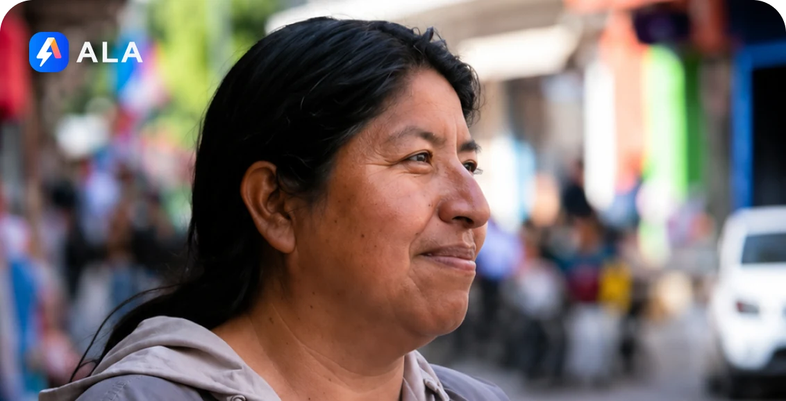
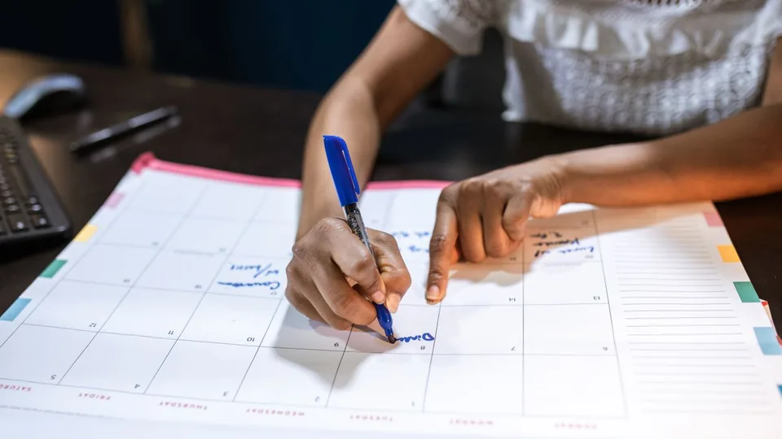
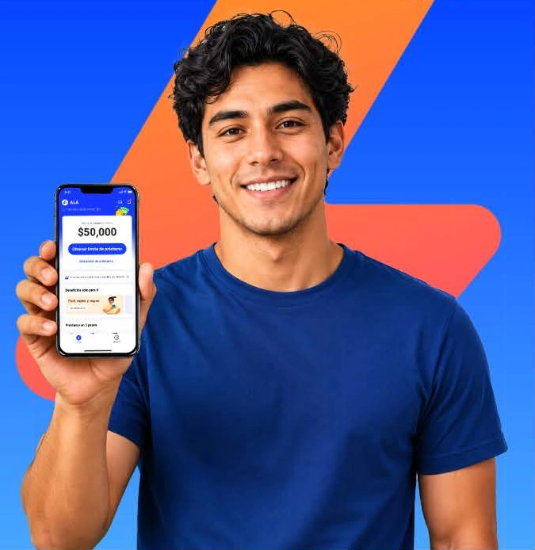
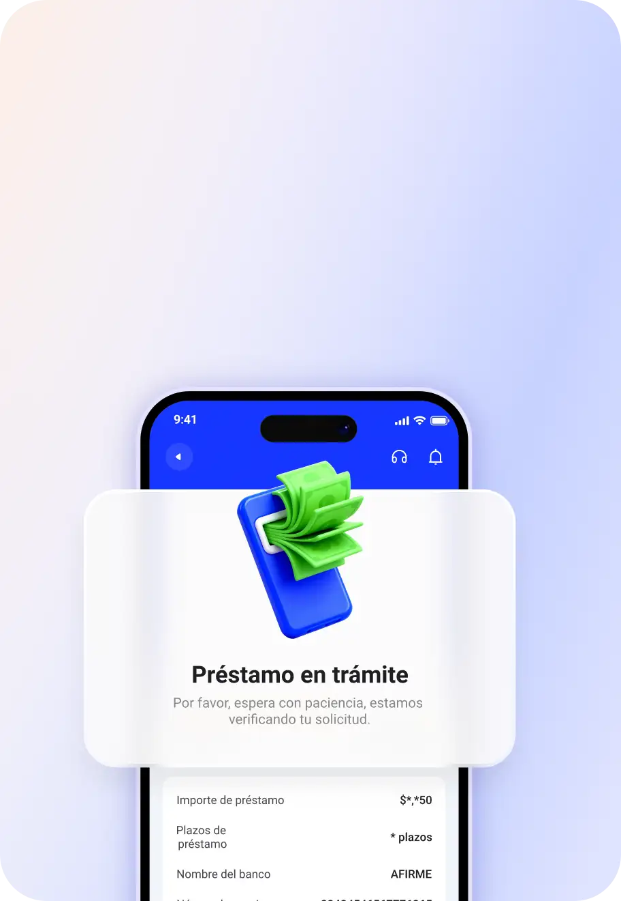

Tu información protegida
Conoce cómo tratamos tus datos personales en nuestro aviso de privacidad.
Monto sujeto a evaluación crediticia. CAT al 30 de junio de 2026.
Solicita desde tu celular. Si recibes una oferta, consulta el monto, el plazo y el total a pagar antes de aceptar.
Conoce cómo tratamos tus datos personales en nuestro aviso de privacidad.
Revisa las fechas de pago y las condiciones de tu oferta antes de aceptarla.
Descarga ALA, completa tus datos y envía tu solicitud para evaluación.
Encuentra ayuda para tu solicitud o tu préstamo en los canales oficiales.
Consulta tu oferta y comprueba que el total a pagar se ajuste a tu presupuesto.
Ver requisitosTener al menos 18 años.
Contar con nacionalidad mexicana.
Debe estar a nombre de quien solicita.
Presenta tu identificación oficial.
Cada solicitud se evalúa de forma individual.
Consulta quién opera ALA, cómo se protegen tus datos y dónde confirmar una comunicación.
ALA es operada por Quantum Wealth Solutions, S.A.P.I. de C.V., SOFOM, E.N.R.
Consultar en SIPRESRevisa el aviso de privacidad antes de proporcionar tus datos.
Aviso de privacidadConfirma cualquier mensaje o dato de pago antes de compartir información.
Ver canales oficiales

Descarga ALA en tu celular, regístrate, completa tus datos y envía tu solicitud. Si recibes una oferta, revisa las condiciones y el total a pagar antes de aceptarla.
Los montos van de $100 a $50,000 MXN. El monto autorizado depende de la evaluación de tu solicitud.
Consulta la tasa, el plazo y el total en tu oferta y contrato. La tasa diaria es desde 0.1% (36% anual). CAT promedio de 548.61% sin IVA, calculado al 30 de junio de 2026 para fines informativos y de comparación. Ver un ejemplo de pago.
En la app, entra a Mi cuenta → Mis préstamos para consultar tu saldo, fecha de vencimiento y medios de pago autorizados. Consultar pagos y cobranza.
Confirma cualquier comunicación en nuestros canales oficiales antes de compartir datos o realizar un pago.
Descarga la app y consulta las opciones para tu préstamo.

Guía de préstamos
Revisa tu presupuesto y conoce qué considerar antes de elegir un préstamo personal.
Leer la guía →Solicita en la app. Monto sujeto a evaluación crediticia.

Conoce quién está detrás de ALA y consulta el registro de nuestra entidad en SIPRES.
Ver información de la empresa ›
Incluye $305 de intereses y $48.80 de IVA. Tu oferta puede variar.
Revisa el monto, el plazo y el total a pagar de tu oferta y decide si se ajusta a tu presupuesto.
Consultar los costos ›Descarga ALA, regístrate y envía tu solicitud con tu INE o IFE y una cuenta bancaria a tu nombre.
Conocer los requisitos ›
De lunes a domingo, de 9:00 a 18:00.
Recibe ayuda con tu solicitud o tus pagos a través de los canales oficiales de ALA.
Ir al centro de ayuda ›Ejemplo a 61 días: $5,353.80 MXN en 4 pagos. Incluye $305.00 de intereses y $48.80 de IVA.
Revisar el contrato ›
Tasa diaria desde 0.1% (36% anual). CAT promedio 548.61% sin IVA, calculado al 30 de junio de 2026. Para fines informativos y de comparación.
Ver condiciones ›
Abre Mi cuenta → Mis préstamos en ALA. Ahí puedes verificar el saldo, las fechas y los métodos de pago autorizados.
Ver cómo pagar ›
Conoce a la empresa detrás de ALA, consulta su registro y revisa cómo tratamos tus datos.
ALA es operada por Quantum Wealth Solutions, S.A.P.I. de C.V., SOFOM E.N.R.
Consultar en SIPRES ↗
Conoce qué datos se solicitan y cómo se usan.
Aviso de privacidad ›Revisa los términos, condiciones y costos antes de aceptar.
Contrato de préstamo ›
Antes de solicitar, considera cuánto puedes pagar junto con tus otros gastos.
Revisar mi presupuesto ›Conoce los requisitos y revisa los pasos antes de iniciar.
Ver preguntas frecuentes ›


Información y consejos para entender mejor tus finanzas.
Más información
Revisa tu presupuesto antes de elegir un préstamo.
Leer la guíaDescarga la aplicación de ALA y regístrate. Completa la solicitud, agrega tu identificación y una cuenta bancaria a tu nombre.
Necesitas tu INE o IFE vigente y una cuenta bancaria propia. Debes ser mayor de edad y contar con nacionalidad mexicana.
Abre la aplicación de ALA para consultar el estado de tu solicitud.
No. Cada solicitud se evalúa de forma individual.
ALA ofrece montos de $100 a $50,000 MXN. El monto autorizado depende de tu evaluación crediticia.
Consulta el monto, el plazo y el costo total en tu oferta y contrato, antes de aceptar.
En ALA, abre Mi cuenta → Mis préstamos para consultar tu saldo y fecha de pago.
Consulta tus opciones de pago y ayuda en nuestros canales oficiales.
Descarga ALA y consulta las condiciones de tu oferta desde la app.